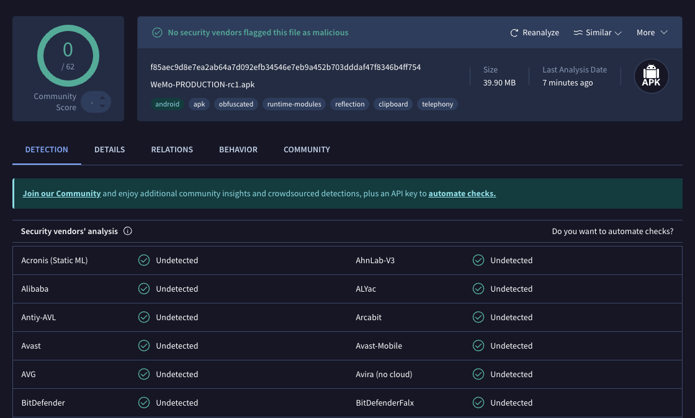

WeMo-PRODUCTION-rc1.apk — WeMo production release, version 1.24.
This is an older production release of the WeMo Android app that supports local control of WeMo devices via UPnP (Universal Plug and Play). Unlike newer versions that rely on cloud connectivity, this version can discover and control WeMo devices directly on the local network.
| Field | Value |
|---|---|
| File | WeMo-PRODUCTION-rc1.apk |
| Version | 1.24 |
| Platform | Android |
| Protocol | UPnP |
| Build Type | Production (RC1) |
| MD5 | 9fcf6ff824a3f4dd7626e22009b206eb |
This APK has been scanned on VirusTotal and confirmed to contain no viruses.

Warning: This APK may be automatically upgraded to the newest WeMo version by Google Play Store, which removes local control support. To prevent this, manually disable auto-update for the WeMo app in the Google Play Store:
This repository contains a legacy WeMo APK that supports local UPnP control.
The APK is proprietary software owned by Belkin. This repository is for archival purposes only.